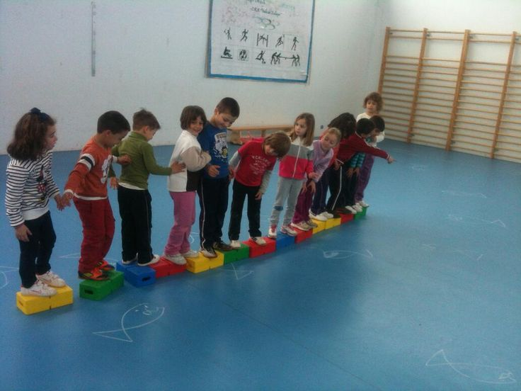
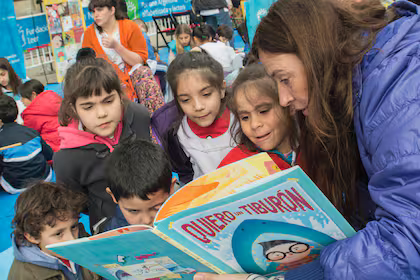
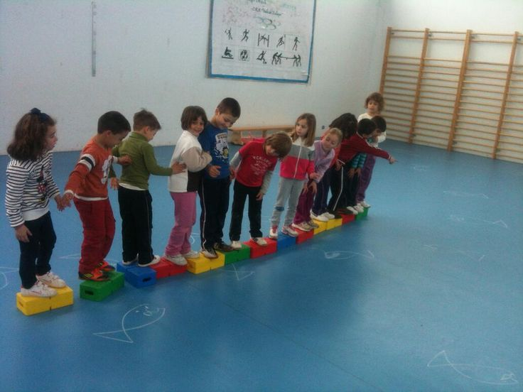
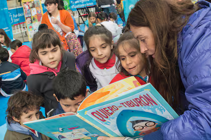

La educación infantil como base del cambio social
La etapa de Educación Infantil es el primer eslabón de una educación pública transformadora. En este nivel se construyen las primeras nociones de cooperación, identidad, igualdad y respeto por la diversidad. Desde una visión republicana, esta etapa no es asistencial, sino profundamente formativa, y por ello debe estar garantizada de forma universal y gratuita.
En EducaWeb desarrollamos proyectos que integran juego, exploración y participación activa de las familias, fomentando una escuela viva y comunitaria desde los primeros años.
 


